Eventos en curso
Consejos de alianzas
Mejora tus edificios
Guía de héroes
Enemigos y estrategias
Recursos y economía
💡 Consejos y Tips del Juego
Aprende estrategias clave para dominar Last Z: Survival Shooter
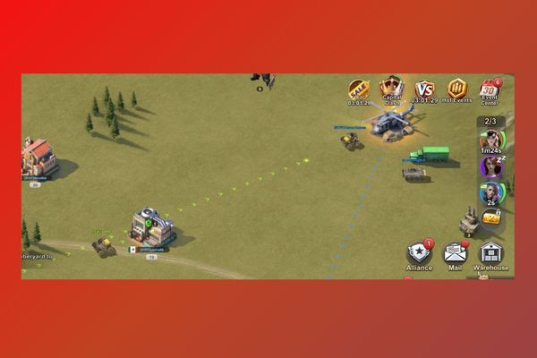
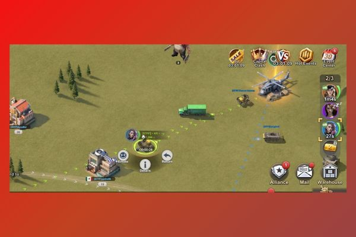
⚡ Movilidad
Refuerzo Rápido
Si hay un tesoro de tu alianza lejos, puedes llegar más rápido reforzando ciudades o bases aliadas. Esta velocidad de refuerzo solo funciona dentro de tu territorio de alianza.
Leer más →
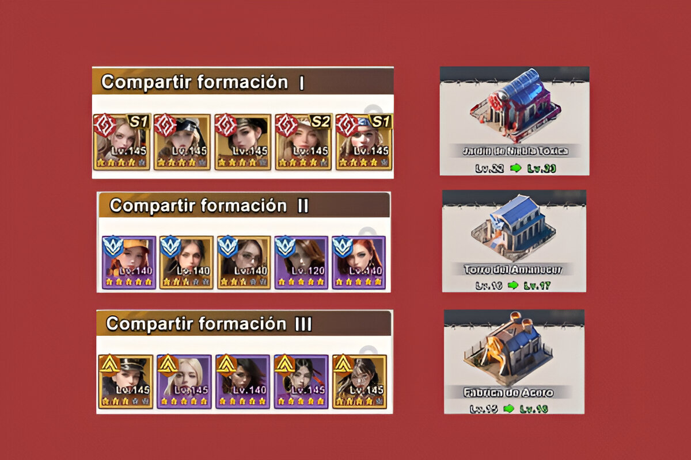
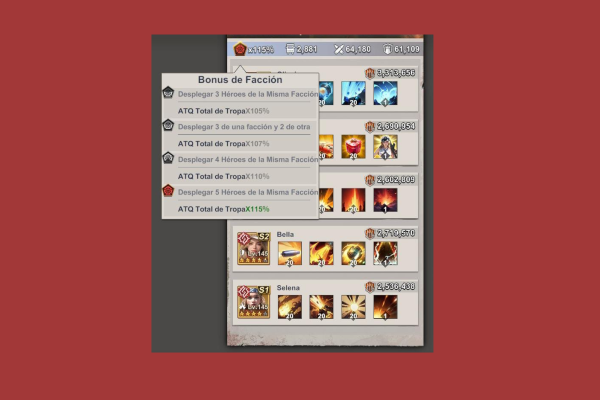
⚔️ Combate
Mejora el ataque de tus formaciones
Alinea 5 héroes de la misma facción en cada tropa para obtener ATQ +115%. Prioriza Rosa Sangrienta en tu primera formación.
Leer más →
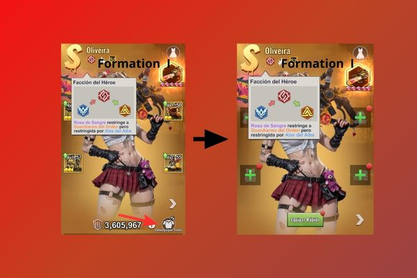
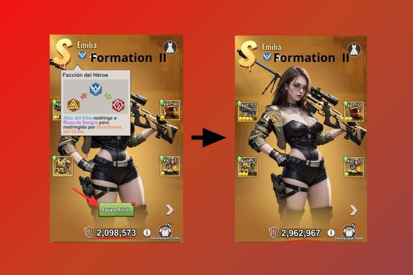
🎯 Estrategia
Rotación de Armaduras en Caravana
Transfiere tus mejores armaduras entre formaciones para maximizar rondas en Caravana. Pasa equipamiento de Rosa → Alba → Guardián según avances.
Leer más →

🎉 Eventos
Maximizar Eventos
En eventos como Preparación Total, guarda recursos para los temas que más puntos dan. No gastes todo en el primer día del evento.
Ver eventos →
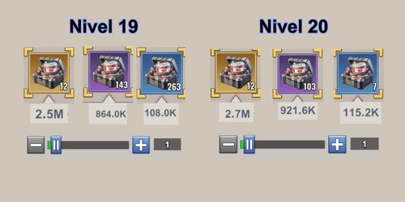

💰 Economía
Guardar Cajas de Recursos
Las cajas de recursos aumentan su valor según tu nivel de Sede. Guarda las cajas doradas y úsalas después del nivel 27+ para obtener más recursos.
Leer más →

🛡️ Alianza
Aprovecha Buffs de Alianza
Dona a tu alianza para desbloquear tecnologías que benefician a todos. Prioriza buffs de construcción y investigación al inicio.
Guía de alianzas →

💵 Compras
Mejores Compras para Principiantes
Si vas a gastar dinero, prioriza Sophia ($1) por su habilidad de construcción y el 2º Constructor ($2) para acelerar tu progreso al inicio.
Leer más →
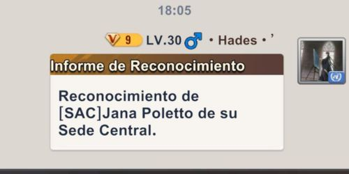
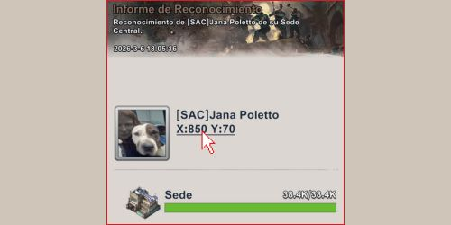
🔍 Reconocimiento
Localizar Bases Reconocidas
Cuando recibes o ves un informe de reconocimiento compartido, haz click en las coordenadas debajo del nombre del jugador para ir directamente a su ubicación en el mapa.
Leer más →
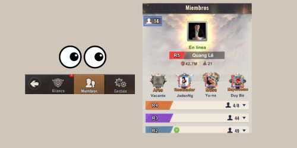
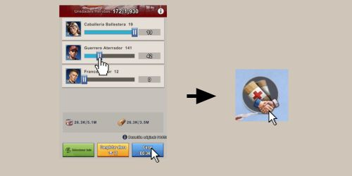
⚕️ Hospital
Curación Eficiente con Ayuda de Alianza
En vez de curar todas tus tropas heridas de golpe, cura en pequeños lotes según cuántos miembros activos hay en tu alianza. Ahorrarás tiempo y aceleradores.
Leer más →

🤝 Alianza
Donación Rápida en Tecnologías
En vez de hacer click repetidamente para donar, mantén presionado el botón. Esto activa multiplicadores (x2, x5, x10) para donar más rápido y obtener más puntos.
Leer más →

⚔️ Combate
Regreso Automático de Tropas
Antes de atacar, activa el casillero "Regreso automático". Así tus tropas regresarán solas después del combate sin tener que hacerlo manualmente.
Leer más →

🏕️ Refugiados
Mejores Refugiados para Reclutar
Los refugiados Mayordomo y Diplomático son los más valiosos del juego. Prioriza conseguirlos para acelerar tu progresión enormemente.
Leer más →